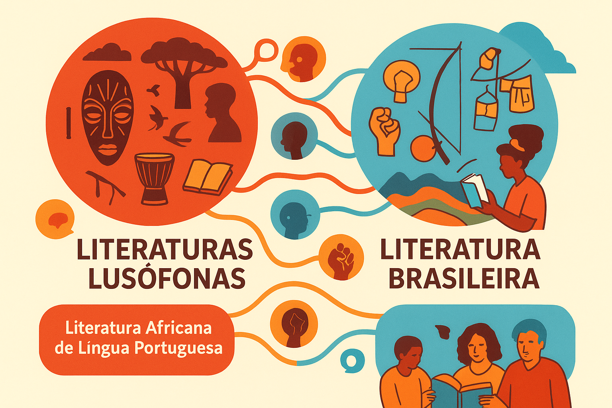

Diálogos entre Literaturas Lusófonas
A literatura produzida em língua portuguesa, tanto no Brasil quanto nos países africanos que compartilham esse idioma (Angola, Moçambique, Cabo Verde, Guiné-Bissau e São Tomé e Príncipe), constitui um campo fértil de diálogos e trocas culturais. Apesar das especificidades históricas e sociais de cada nação, é possível identificar pontos em comum que aproximam essas produções literárias, especialmente no que diz respeito à oralidade, memória coletiva, resistência e identidade.
Oralidade como matriz cultural
A oralidade é uma marca fundamental das literaturas de língua portuguesa fora da Europa. Nos países africanos, tradições como contos, provérbios e lendas transmitidos de geração em geração servem de base para muitos textos literários modernos. Autores como Mia Couto e Luandino Vieira exploram esse aspecto, criando narrativas que misturam oralidade e escrita.
No Brasil, manifestações como a literatura de cordel, os contos populares e a influência das tradições africanas na cultura oral também deixaram fortes marcas na produção literária, de Monteiro Lobato a Ariano Suassuna.
Assim, tanto no Brasil quanto na África, a literatura escrita se alimenta da oralidade, reafirmando vínculos com a cultura popular e ancestral.
Memória coletiva e ancestralidade
Outro ponto de encontro entre as literaturas lusófonas é a valorização da memória coletiva. Autores africanos, como Pepetela (Angola), frequentemente recorrem à história de seus povos para construir narrativas que resgatam experiências de colonização, lutas de independência e reconstrução nacional.
No Brasil, a memória da escravidão e da diáspora africana aparece com força em escritores como Conceição Evaristo, cuja escrita de “escrevivência” busca dar voz às vivências de mulheres negras.
Tanto em África quanto no Brasil, a literatura não é apenas expressão individual, mas também instrumento de preservação e reconstrução da história coletiva.
Resistência cultural e política
A literatura também se afirma como ato de resistência. Em Angola e Moçambique, escritores usaram a palavra escrita como forma de denúncia contra o colonialismo português, transformando a literatura em arma política.
No Brasil, desde o Romantismo abolicionista (com Castro Alves) até a literatura contemporânea, a palavra literária denuncia desigualdades sociais, raciais e políticas.
Nesse sentido, a literatura lusófona vai além da estética: torna-se ferramenta de luta e consciência crítica.
Identidade e reinvenção da língua
A língua portuguesa, imposta pelo processo colonial, foi transformada em espaço de criação identitária. Em África, autores reinventaram o português, mesclando-o a expressões das línguas locais, criando uma nova musicalidade literária. Mia Couto, por exemplo, é conhecido por neologismos que dão sabor africano ao português.
No Brasil, desde Guimarães Rosa até autores contemporâneos, o português também foi reinventado com regionalismos, neologismos e marcas da oralidade, aproximando a literatura da realidade do povo.
Assim, tanto brasileiros quanto africanos afirmam sua identidade cultural ao “descolonizar” a língua e transformá-la em veículo de expressão autêntica.
“A literatura africana em língua portuguesa e a literatura brasileira compartilham um destino comum: reinventar a língua do colonizador e transformá-la em expressão viva de suas memórias, resistências e identidades.”
CHABAL, Patrick. A literatura e a política em África. Lisboa: Vega, 1994.
COUTO, Mia. Terra Sonâmbula. Lisboa: Caminho, 1992.
EVARISTO, Conceição. Olhos d’água. Rio de Janeiro: Pallas, 2014.
MATA, Inocência. Literaturas Africanas e formulações pós-coloniais. Lisboa: Colibri, 2007.
PEPETELA. Mayombe. Lisboa: Dom Quixote, 1980.